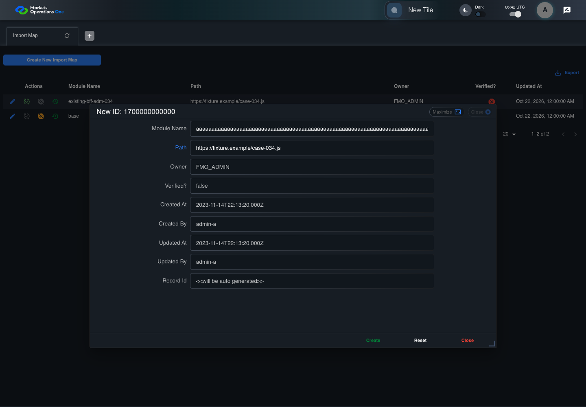

BFF-ADM-034 current BFF administration through actual UI
PASS · application/run-072/bff-adm-034-current-bff-administration-through-actual-ui-b446eec7903a-attempt-1 · ACTUAL_APPLICATION_LOCAL_SERVICES
Actual current React and exact-current BFF admin controllers/services/JPA with actual migration DDL in disposable PostgreSQL. Controlled OUD/EMS2 identities and local Spring bootstrap. Fixture SQL seeds/mutates isolated records; service errors are actual database errors. Undefined agreed messages remain unresolved acceptance.
2026-10-22T06:42:13.519Z to 2026-10-22T06:42:19.954Z
Assertions and result · Artifact manifest · Exact run inputs and source hashes
Result SHA-256:ba3d1c7c77c8063e082469a322f051468370b7c6755f83cee20645639edd6668Machine observations
- actual-identity-projection.json
b74c4a16a9122f4c1e5c7be48af572b3077f8f64ab4d65369a03a227ce826efe - actual-migration-schema.json
176fd76287729c2915a52db9702205ab7357f887029156c04f5aeba222ddd297 - baseline-inputs.json
861351efef37fef2490b2e4de8470121a53f586e0c3e1c03c3dba6b013f50a2b - bff-boundary.json
c207285f40f3df5e45ef5b5849264ef473d5f1af0d108e2a3eea0e9c0ad8d432 - committed-ui-submission-comparisons.json
5353969d431e61e59d115aa3fbe8463c41fefb7fe185302b071e34fef8fbc453 - creation-clock.json
42f5b9854180184bcb46cbe39806c42fda746655040dab808697f5fbc22d9ce6 - fixture-step-4.json
94f8ab90443a3c448406ff693cfd5d9a128073fbf6157ff93dbbe728130f20c2 - fixture-step-5.json
83ff8224d70eacf9526a29c346c42c5fccd52d3600438317de3799456fa7612c - initial-persisted-records.json
c61bc4048e9413c2d4f28f361d8b3898f52a2ff934f8d022211a80da3b32ea24 - persisted-after-submit.json
ac2c8b55ceca166993dd11a93bc21736db01594b44ad386b0980883c7acbd0e8 - ui-origin-bff-requests.json
75d935e7898b6bce820c3cf0d7084e7a8b84f3fab42df7e2319983b2d133cd2f
Screenshot capture: CAPTURED. Named frames: 14.
Step screenshot bindings: COMPLETE. 13/13 canonical steps have execution screenshots.
Bindings measure structural coverage only. They do not establish screenshot content quality or relevance.
Screenshot content review: NOT_REVIEWED. Recorded context: 0/14 frames. Identical image bytes: 7 repeated frames. Recorded context does not establish human visual review.
Canonical step timeline
Given Admin A uses subject "admin-a" with role "FMO_ADMIN" in an isolated authenticated browser
Execution: PASSED.1. step-01 Visible state after step 1: Given Admin A uses subject "admin-a" with role "FMO_ADMIN" in an isolated authenticated browser
2026-10-22T06:42:16.165Z · 1440×1000
Step: /Users/lushevol/code/github/ratan-release-impact/workbench/tasks/ui-test-coverage-20261022/test-cases.md:16109
SHA-256:2e409d4f67daf4316f14b847f1e84d11cc704622c33a7c7c0b8ab275e4a086e1And the controlled Import Map fixture records the initial grid rows and persisted values
Execution: PASSED.
2. step-02 Visible state after step 2: And the controlled Import Map fixture records the initial grid rows and persisted values
2026-10-22T06:42:16.299Z · 1440×1000
Step: /Users/lushevol/code/github/ratan-release-impact/workbench/tasks/ui-test-coverage-20261022/test-cases.md:16110
SHA-256:2e409d4f67daf4316f14b847f1e84d11cc704622c33a7c7c0b8ab275e4a086e1Image bytes match frame 1. An unchanged image can be valid for consecutive assertions. This match does not establish correct step content.
And the controlled creation clock returns 1700000000000 milliseconds
Execution: PASSED.
3. step-03 Visible state after step 3: And the controlled creation clock returns 1700000000000 milliseconds
2026-10-22T06:42:16.361Z · 1440×1000
Step: /Users/lushevol/code/github/ratan-release-impact/workbench/tasks/ui-test-coverage-20261022/test-cases.md:16111
SHA-256:2e409d4f67daf4316f14b847f1e84d11cc704622c33a7c7c0b8ab275e4a086e1Image bytes match frame 2. An unchanged image can be valid for consecutive assertions. This match does not establish correct step content.
And the baseline fixture data defines "Module Name" as "container-034"
Execution: PASSED.
4. step-04 Visible state after step 4: And the baseline fixture data defines "Module Name" as "container-034"
2026-10-22T06:42:16.410Z · 1440×1000
Step: /Users/lushevol/code/github/ratan-release-impact/workbench/tasks/ui-test-coverage-20261022/test-cases.md:16112
SHA-256:2e409d4f67daf4316f14b847f1e84d11cc704622c33a7c7c0b8ab275e4a086e1Image bytes match frame 3. An unchanged image can be valid for consecutive assertions. This match does not establish correct step content.
And the baseline fixture data defines "Path" as "https://fixture.example/case-034.js"
Execution: PASSED.
5. step-05 Visible state after step 5: And the baseline fixture data defines "Path" as "https://fixture.example/case-034.js"
2026-10-22T06:42:16.458Z · 1440×1000
Step: /Users/lushevol/code/github/ratan-release-impact/workbench/tasks/ui-test-coverage-20261022/test-cases.md:16113
SHA-256:2e409d4f67daf4316f14b847f1e84d11cc704622c33a7c7c0b8ab275e4a086e1Image bytes match frame 4. An unchanged image can be valid for consecutive assertions. This match does not establish correct step content.
And the prepared database uses the inspected migration DDL and reports its applied schema revision
Execution: PASSED.
6. step-06 Visible state after step 6: And the prepared database uses the inspected migration DDL and reports its applied schema revision
2026-10-22T06:42:16.505Z · 1440×1000
Step: /Users/lushevol/code/github/ratan-release-impact/workbench/tasks/ui-test-coverage-20261022/test-cases.md:16114
SHA-256:2e409d4f67daf4316f14b847f1e84d11cc704622c33a7c7c0b8ab275e4a086e1Image bytes match frame 5. An unchanged image can be valid for consecutive assertions. This match does not establish correct step content.
When Admin A clicks the button labeled "Create New Import Map" on the Import Map administration page
Execution: PASSED.7. step-07 Visible state after step 7: When Admin A clicks the button labeled "Create New Import Map" on the Import Map administration page
2026-10-22T06:42:16.723Z · 1440×1000
Step: /Users/lushevol/code/github/ratan-release-impact/workbench/tasks/ui-test-coverage-20261022/test-cases.md:16115
SHA-256:1cc869886c6b10d44e7fc7598f8133f95dc1a2ed7dddce1b331e8dfad6f0b136Then the dialog titled "new ID: 1700000000000" is visible on the Import Map administration page
Execution: PASSED.8. step-08 Visible state after step 8: Then the dialog titled "new ID: 1700000000000" is visible on the Import Map administration page
2026-10-22T06:42:16.797Z · 1440×1000
Step: /Users/lushevol/code/github/ratan-release-impact/workbench/tasks/ui-test-coverage-20261022/test-cases.md:16116
SHA-256:12a0783bdae9e92f6ef0f338b54b5637ee153523dd4b4db3b0f3602ad56d4607When Admin A fills the textbox labeled "Module Name" with exactly 256 ASCII "a" characters in dialog "new ID: 1700000000000"
Execution: PASSED.9. step-09 Visible state after step 9: When Admin A fills the textbox labeled "Module Name" with exactly 256 ASCII "a" characters in dialog "new ID: 1700000000000"
2026-10-22T06:42:17.349Z · 1440×1000
Step: /Users/lushevol/code/github/ratan-release-impact/workbench/tasks/ui-test-coverage-20261022/test-cases.md:16117
SHA-256:0e44398f2c3edb5052ca2ead2f1d843b7077d7f0f7a9e467fec1c2102900e5e7And Admin A fills the textbox labeled "Path" with "https://fixture.example/case-034.js" in dialog "new ID: 1700000000000"
Execution: PASSED.
10. step-10 Visible state after step 10: And Admin A fills the textbox labeled "Path" with "https://fixture.example/case-034.js" in dialog "new ID: 1700000000000"
2026-10-22T06:42:18.284Z · 1440×1000
Step: /Users/lushevol/code/github/ratan-release-impact/workbench/tasks/ui-test-coverage-20261022/test-cases.md:16118
SHA-256:e033f28e36d00c527c4f4914f6ebab434e5b8cdeecb9501937b208c06461d22fAnd Admin A clicks the button labeled "Create" in dialog "new ID: 1700000000000"
Execution: PASSED.11. step-11 Visible state after step 11: And Admin A clicks the button labeled "Create" in dialog "new ID: 1700000000000"
2026-10-22T06:42:18.847Z · 1440×1000
Step: /Users/lushevol/code/github/ratan-release-impact/workbench/tasks/ui-test-coverage-20261022/test-cases.md:16119
SHA-256:e953e96334b3ed573a01003aab7f5709ef3051f079e72f6cebfe9292110b283dThen the Import Map data grid with column "Record Id" row identifiers and loaded field values equal the initial grid snapshot on the Import Map administration page
Execution: PASSED.
12. step-12 Visible state after step 12: Then the Import Map data grid with column "Record Id" row identifiers and loaded field values equal the initial grid snapshot on the Import Map administration page
2026-10-22T06:42:19.147Z · 1440×1000
Step: /Users/lushevol/code/github/ratan-release-impact/workbench/tasks/ui-test-coverage-20261022/test-cases.md:16120
SHA-256:f45ac0814eb1202e79846989c33e7d3d47721fc20363a09243f0ab82420ac7b4And the alert with severity "error" in the portal snackbar contains the exact text "Record not created."
Execution: PASSED.
13. step-13 Visible state after step 13: And the alert with severity "error" in the portal snackbar contains the exact text "Record not created."
2026-10-22T06:42:19.252Z · 1440×1000
Step: /Users/lushevol/code/github/ratan-release-impact/workbench/tasks/ui-test-coverage-20261022/test-cases.md:16121
SHA-256:f45ac0814eb1202e79846989c33e7d3d47721fc20363a09243f0ab82420ac7b4Image bytes match frame 12. An unchanged image can be valid for consecutive assertions. This match does not establish correct step content.
Additional named frames
The final visible state after the named test assertions.
2026-10-22T06:42:19.400Z · 1440×1000Step: Test source: /Users/lushevol/code/github/ratan-release-impact/workbench/e2e/audit-specs/bff-admin.spec.ts:11
SHA-256:
f45ac0814eb1202e79846989c33e7d3d47721fc20363a09243f0ab82420ac7b4Image bytes match frame 13. An unchanged image can be valid for consecutive assertions. This match does not establish correct step content.
Screenshots establish visible state only. Assertions and traces support functional claims.